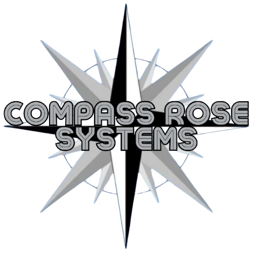

Sistemas sob medida
Ambientes digitais para organizar cadastros, atendimentos, avaliações, relatórios, acompanhamento e decisões.

Apresentar meu projeto ↗Transformamos necessidades reais em sistemas, plataformas e fluxos digitais que organizam o trabalho e tornam sua operação possível de executar.
Você não precisa chegar com um briefing técnico.
Basta trazer a ideia, o problema ou o processo que hoje não funciona como deveria.
Planilhas que não conversam, informações perdidas, atendimento repetitivo, relatórios feitos à mão ou uma ideia de serviço que ainda não encontrou sua forma digital.
É aí que a Compass Rose Systems entra: para transformar a necessidade em uma estrutura clara, útil e possível de usar no dia a dia.
Ambientes digitais para organizar cadastros, atendimentos, avaliações, relatórios, acompanhamento e decisões.
Processos antes dispersos transformados em etapas claras, com regras, responsáveis e informações no lugar certo.
Da ideia de um serviço, plataforma ou ferramenta à estrutura que permite apresentar, operar e evoluir o projeto.
Mapeamos o problema, as pessoas envolvidas, as informações e o resultado esperado.
Definimos fluxo, campos, regras, etapas e entregas antes de transformar a ideia em sistema.
Construímos uma solução acessível, objetiva e compatível com a realidade da operação.
Acompanhamos o uso e ajustamos a solução à medida que o projeto amadurece.
Conte o que você precisa organizar, criar ou fazer funcionar. A conversa é o ponto de partida para entendermos se existe uma solução digital adequada ao seu momento.
Agende uma conversa de apresentação
11 2110-5473contato@compassrosesystems.com.brApresentar meu projeto ↗